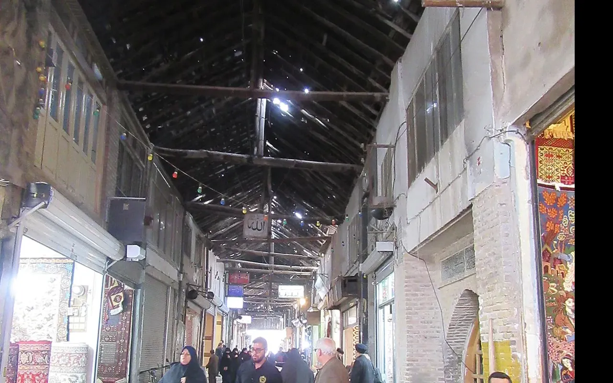

الطعام المحلي · أطباق ونصائح للزائر
الطعام في مشهد: أطباق محلية وما تسأل عنه قبل الطلب

تجربة الطعام جزء جميل من زيارة مشهد، لكن اختيار الوجبة المناسبة لا يعتمد على اسم الطبق وحده. تختلف المكونات وطريقة التحضير وحجم الحصة من مطعم إلى آخر، لذلك اسأل عن التفاصيل قبل الطلب، خاصة إذا كنت مع أطفال أو لديك حساسية غذائية أو تفضيلات محددة.
أطباق محلية يمكنك التعرف عليها
- شيشليك شانديز: أضلاع لحم تُشوى على الفحم، وتُقدم غالباً مع الأرز أو المقبلات. راجع دليل مطاعم الشيشليك في مشهد وشانديز.
- چلو ماهیچه: أرز مع موزة لحم مطهوة، وتختلف طريقة التتبيل والتقديم بين المطاعم.
- كباب كوبيده وبرگ: نوعان من الكباب يختلفان في نوع اللحم وطريقة التحضير.
- ديزي أو آبگوشت: وجبة تقليدية تُحضّر من اللحم والبقوليات وتُقدم عادة مع الخبز.
- شوله مشهدی: طبق محلي كثيف يُحضّر بمكونات متعددة، وقد تختلف وصفته من مكان إلى آخر.
- بستني سنتي وفالوده: من الحلويات والمثلجات التقليدية التي قد تجدها في محلات متخصصة.
اسأل عن المكونات وطريقة التحضير
إذا كنت لا تأكل نوعاً معيناً من اللحوم أو لا تتحمل التوابل أو لديك حساسية، اشرح ذلك بوضوح قبل تجهيز الطلب. لا تعتمد على اسم الطبق وحده، واسأل عن الصلصات والمكسرات ومنتجات الحليب والزيوت واحتمال التلامس مع مكونات أخرى. إذا لم يستطع العاملون تأكيد المكونات في حالة حساسية شديدة، فاختر طبقاً آخر أو مكاناً يستطيع الإجابة بوضوح.
الطعام مع الأطفال والعائلة
تحقق من حجم الحصة، وتوفر وجبات بسيطة، ومقاعد مناسبة، ومكان هادئ إذا كان معك طفل صغير أو شخص كبير في السن. اسأل عن وقت إعداد الطعام إذا كان جدولكم مزدحماً، ولا تفترض أن كل المطاعم توفر قائمة أطفال أو مقاعد خاصة.
افهم السعر قبل الطلب
راجع القائمة والسعر النهائي وحجم الحصة، واسأل عما إذا كان الأرز والمقبلات والمشروبات تُحسب بشكل منفصل. في بعض المطاعم يُحسب الكباب بالسيخ أو بالوزن، لذلك تأكد من وحدة التسعير وعدد الحصص قبل الطلب. اقرأ الفاتورة واسأل عن أي بند غير واضح.
اختيار المطعم والموقع
اختر المكان بحسب مسار يومك واحتياجات المجموعة، لا بحسب صورة أو تقييم قديم فقط. تحقق من العنوان وساعات العمل والقائمة الحديثة في يوم الزيارة، خاصة في العطل والمواسم. إذا كان المطعم خارج مركز المدينة، احسب وقت الذهاب والعودة واتفق على وسيلة النقل مسبقاً.
عبارات فارسية قد تساعدك
| بالفارسية | المعنى بالعربية |
|---|---|
| قیمت این غذا چقدر است؟ | كم سعر هذا الطبق؟ |
| این غذا تند است؟ | هل هذا الطبق حار؟ |
| مواد این غذا چیست؟ | ما مكونات هذا الطبق؟ |
| گوشت گوسفند است؟ | هل اللحم لحم غنم؟ |
| صورتحساب لطفاً | الحساب من فضلك |
أدلة تساعدك على الاختيار
إذا كنت ترغب في تجربة الشيشليك، راجع دليل المطاعم والأطباق المشهورة. وللتسوق من الأسواق التقليدية، اقرأ دليل أسواق مشهد. وإذا كنت تسافر مع الأسرة، راجع نصائح الرحلة العائلية.
أسئلة شائعة
ما أشهر الأطباق التي يمكن تجربتها في مشهد؟
من الأطباق المعروفة الشيشليك، چلو ماهیچه، كباب كوبيده وبرگ، ديزي، وشوله مشهدی، إضافة إلى المثلجات التقليدية.
هل أستطيع معرفة مكونات الطبق من اسمه؟
ليس دائماً؛ تختلف الوصفات بين المطاعم. اسأل عن المكونات وطريقة التحضير قبل الطلب.
كيف أتجنب اختلاف السعر في الفاتورة؟
اسأل عن سعر الحصة ووحدة الحساب وما إذا كانت الأرز والمقبلات والمشروبات منفصلة قبل تأكيد الطلب.
إذا كنت تريد اختيار مكان مناسب للطعام ضمن برنامج رحلتك، أرسل عدد المسافرين والوجهة والوقت، وسأساعدك في مراجعة التفاصيل اللوجستية الممكنة. تواصل مع حسين عبر واتساب